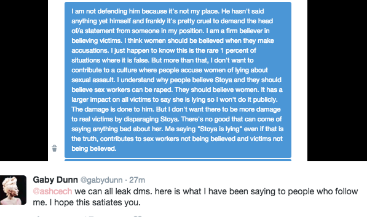

< < < Back
Is Porn Star Stoya Lying About Being Raped By James Deen? – Return Of Kings
Over the weekend, the feminist world was torn asunder with porn star Stoya’s claim that she was raped by industry colleague and former boyfriend James Deen. Deen has become one of the porn industry’s biggest stars in the past few years, propelled by his “female-friendly” image and his fashionable social justice beliefs: for example, he recently castigated the industry for its “racism” and attempted to shame female stars who refuse to perform with black men. Now Deen is getting hoisted on his own petard:
https://twitter.com/stoya/status/670685987601825792
https://twitter.com/stoya/status/670689154498449413
While Stoya has yet to go to the police—despite the fact that rape is a crime—the left has already set their lynch mobs on Deen. Feminist website The Frisky has already pulled his “What Would James Deen Do?” column from the site, with editor Amelia McDonell-Parry hyperventilating in response to Stoya’s accusations:
I imagine there will be some who will say, “But what about James Deen’s side to this story? What about evidence?” As is the case with the vast majority of rape accusations, especially between intimate partners, Stoya’s story of being raped by James Deen is very likely the only “evidence.” He is certainly within his rights to deny it, though it’s worth noting that he and his representatives have remained mute on the matter, and James has not responded to the text message I sent him yesterday. Like so many rape cases, this will very likely be a “he said/she said” situation. And as I tweeted last night, today and every day, I BELIEVE WOMEN.
Other porn stars are coming out of the woodwork with their own spurious accusations against Deen.
For his part, Deen has vehemently denied Stoya’s accusations in both a series of Tweets as well as a post on his Instagram page:
As Return of Kings publisher Roosh famously stated a year ago, all public rape accusations are false. Mentally unstable women such as Crystal Gail Mangum or Jackie Coakley have used false rape accusations in the past as a form of attention whoring, drawing accolades and sympathy from a left-wing media too lazy to check the facts. All the evidence points to Stoya’s accusations against James Deen being completely fake.
How To Rejuvenate Your Fading Career
On Sunday, attorney Mike Cernovich posted an article in which he laid out the case for Stoya’s rape accusation being false. As Cernovich pointed out, Stoya owns a porn website called TRENCHCOATx (link NSFW) which features several movies starring James Deen. Indeed, Stoya’s most recent scene on the site is with Deen. Why would a woman willingly appear in a porn movie with the man who purportedly assaulted her?

Additionally, Cernovich points out that Stoya mentioned being a “feminist” in her accusation. What does her feminism have to do with the fact that she was raped? The answer is nothing:
Stoya specifically mentions feminism is her public rape accusation against James Deen. This is proof she seeks to interject ideology into what should be a police matter. She is also sending a bat signal out to SJW hate mobs.
Additionally, Gaby Dunn, a friend of Deen’s, stated that while she knows Stoya’s accusations against him are false, she won’t defend him because she’s afraid it will deter real rape victims from speaking out:

Not only that, Stoya has acquired an extremely negative reputation in the porn industry for her behavior. Conversely, James Deen has seen his career explode in the past few years.
With just two Tweets, Stoya has managed to revive her failing career. Her accusation has not only been picked up by numerous media outlets, James Deen is already suffering professional fallout despite the fact that charges haven’t even been filed. Feminists have even created a Twitter hashtag campaign, #StandWithStoya, to further promote her cause. Getting “raped” may well have been the best thing that could have happened to Stoya.
Some Rapes Are More Equal Than Others

It’s worth contrasting the response to Stoya’s accusations with that of another porn star who was actually raped: Cytherea. Nearly a year ago, Cytherea was the victim of a home invasion in which she was violently gang raped and her family was robbed at gunpoint. The crime was so brutal that not only were Cytherea’s assailants tried as adults (two of them were minors at the time), life imprisonment was one of the sentences they could have received if found guilty.
Despite this, feminists completely ignored what happened to Cytherea. There were no #StandWithCytherea hashtag campaigns, feminist sites such as Jezebel refused to cover the story, and SJW spokescreeps such as Arthur Chu went so far as to accuse GamerGate supporters of “weaponizing” her rape. Indeed, I was one of the few journalists who even bothered to write about the story. I stated that feminists were ignoring Cytherea’s story not only because her rapists were black, but because of the class element; the kinds of rape stories feminists love involve upper-middle class white women being taken advantage of by “entitled” white men.
Feminists are celebrating Stoya and ignoring Cytherea because Stoya’s false accusation fits the social justice narrative: a tale of a preppy, “privileged” white man (ignoring the fact that James Deen is a Jewish supremacist) brutalizing an upper-middle class white woman. As Gaby Dunn’s example shows, the fact that Stoya’s story is flimsier than a $2 penis pump doesn’t matter to them: it’s about defending the narrative at all costs.
With the rapidity with which Stoya’s claims are collapsing, it’s increasingly unlikely that James Deen will see jail time for a crime he didn’t commit. But the sheer determination feminists have in pushing a clearly false accusation is disturbing and shows that we still have a long way to go before making false rape accusations becomes unfashionable once again.
Read More: Is Kacee Boswell Lying About Being Raped By Ronnie Radke?